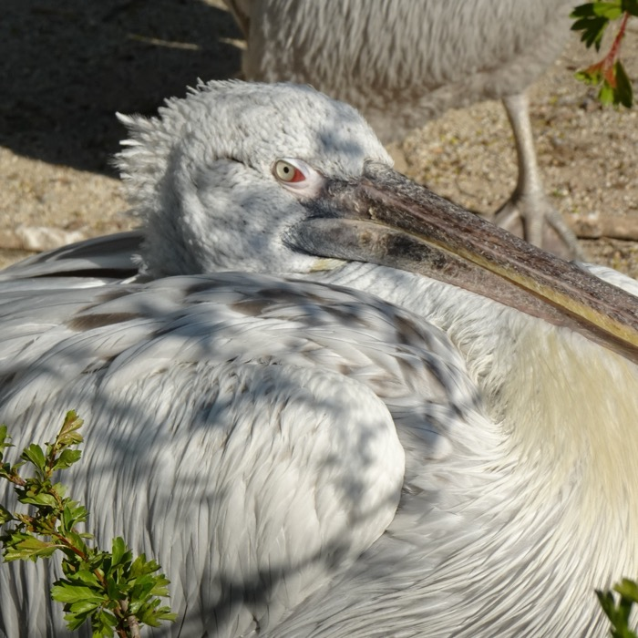
Dalmatian Pelican
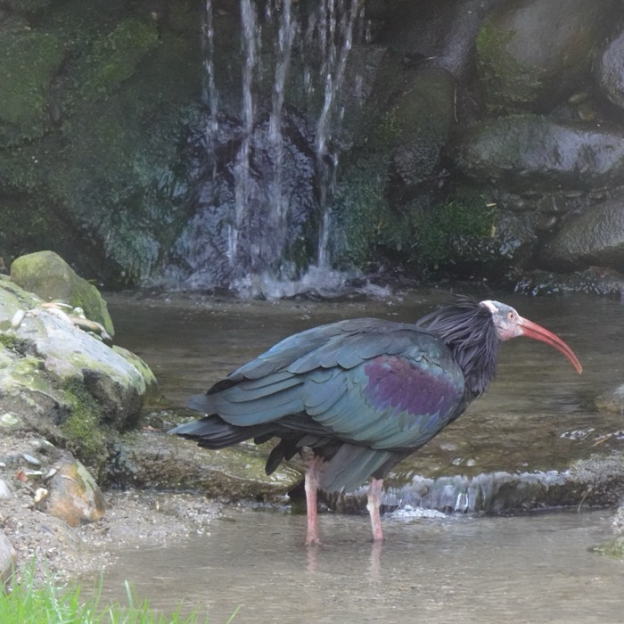
Northern Bald Ibis
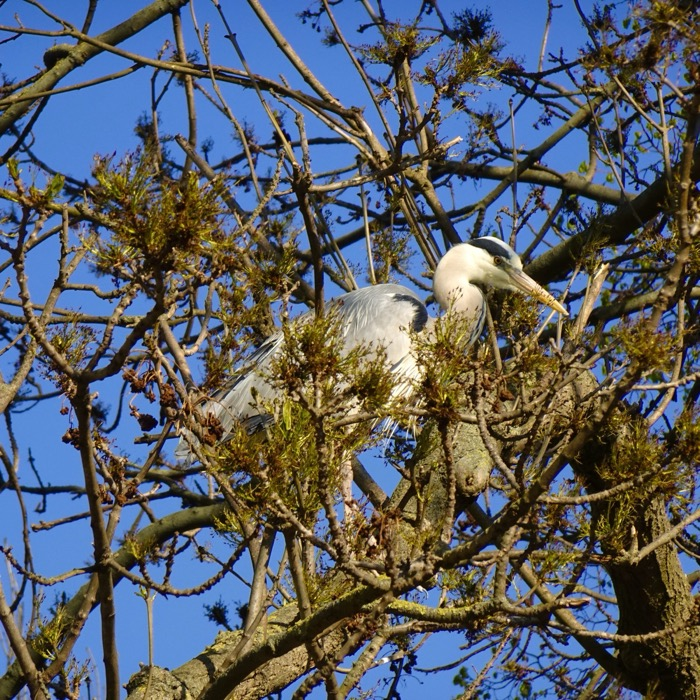
Grey Heron
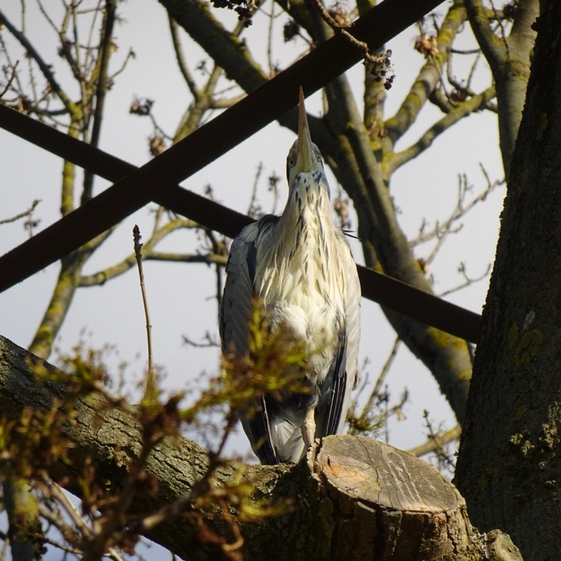
Grey Heron — Alert
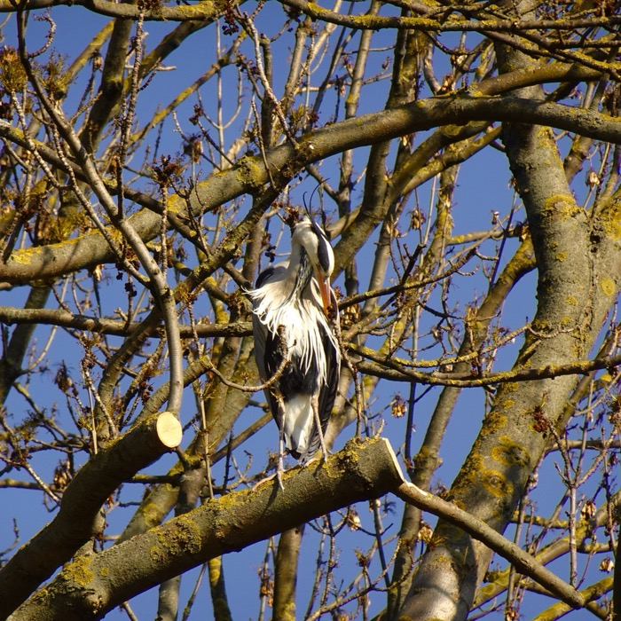
Grey Heron — Juvenile
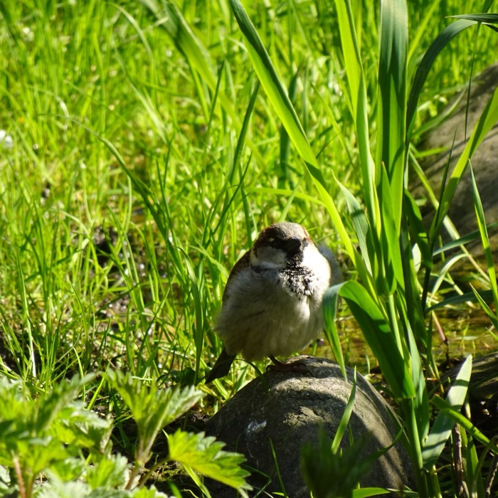
House Sparrow
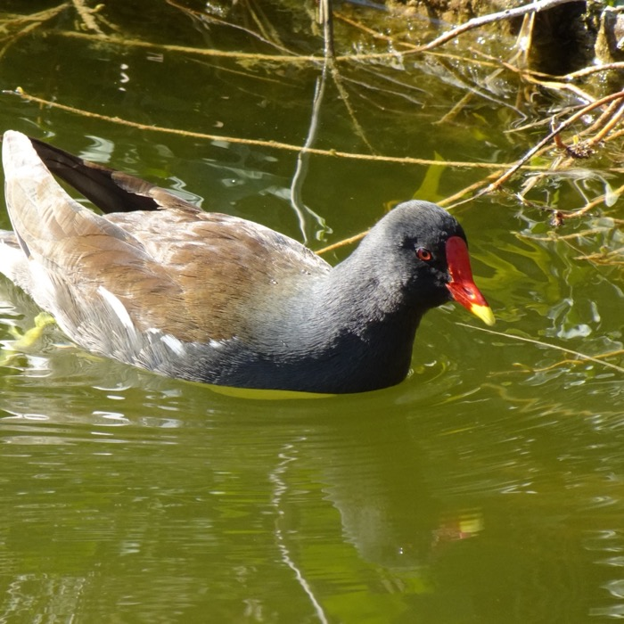
Common Moorhen
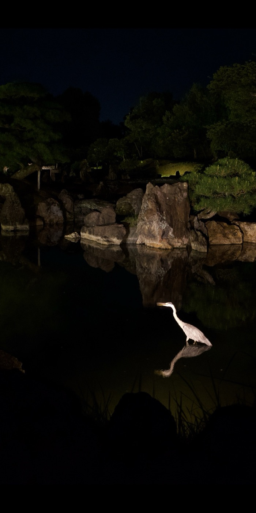
Heron — Kyoto
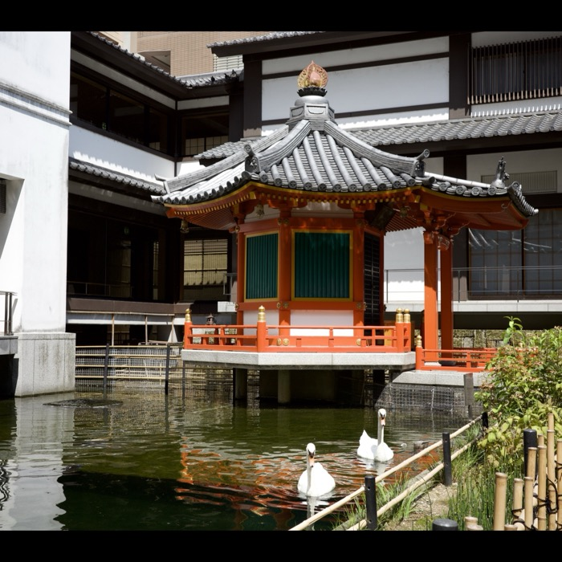
Swans — Kyoto
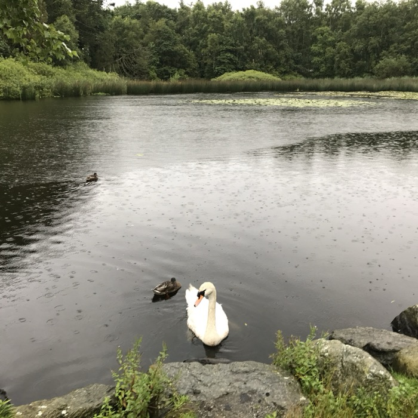
Swan in Rain
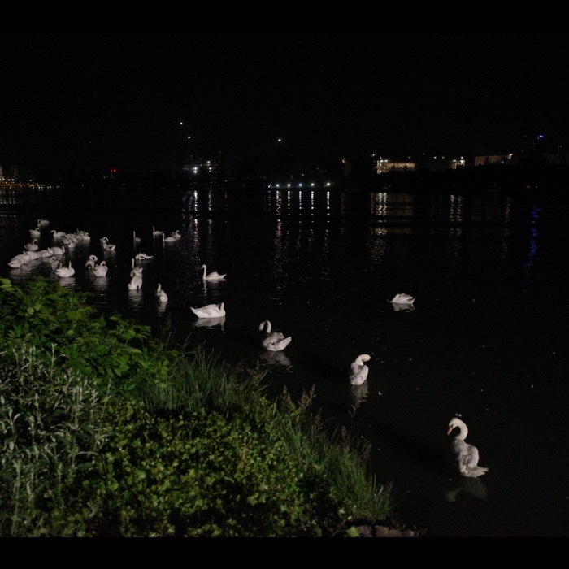
Swans at Night
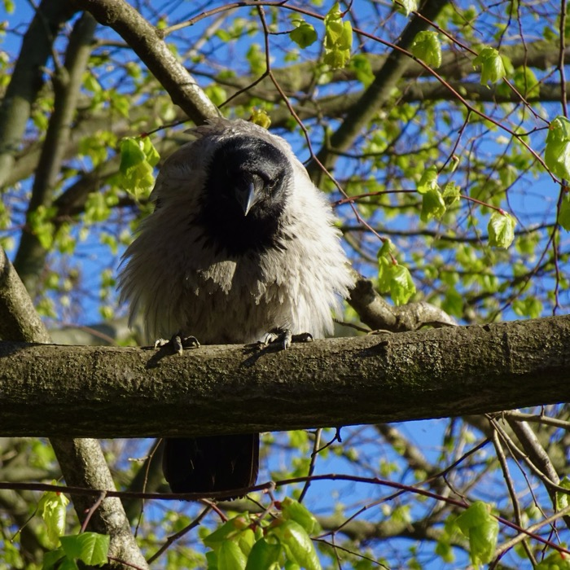
Hooded Crow
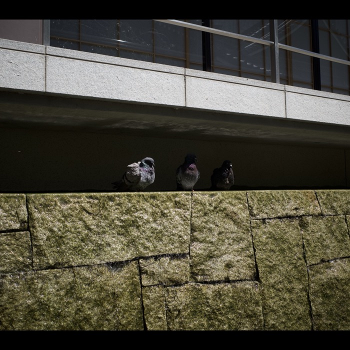
Three on a Wall
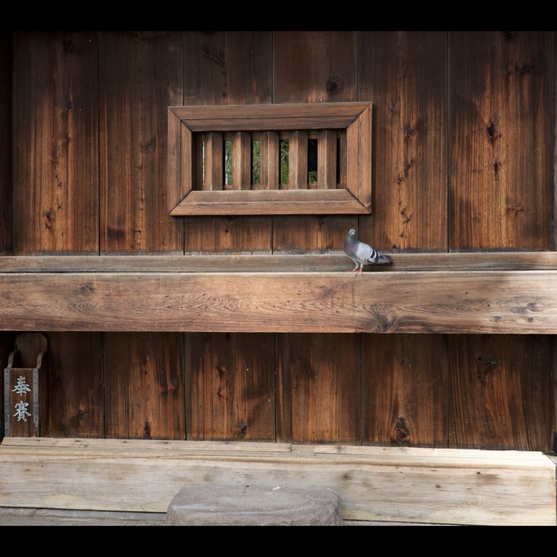
Temple Pigeon
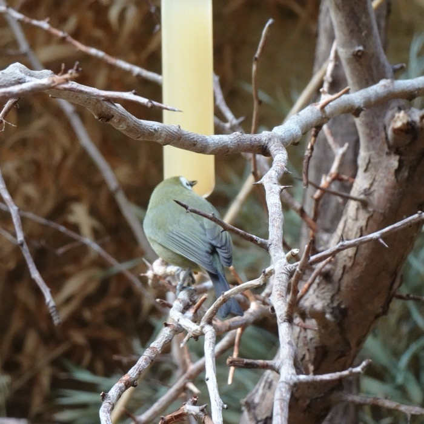
Warbler
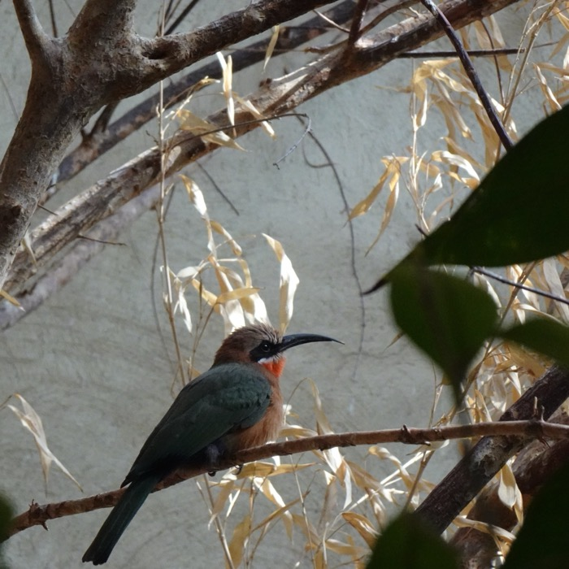
White-fronted Bee-eater
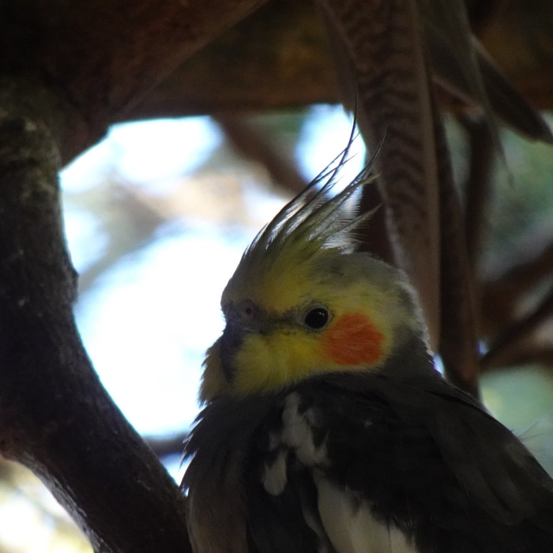
Cockatiel
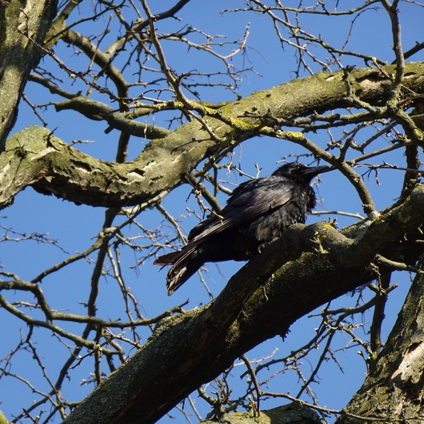
Carrion Crow
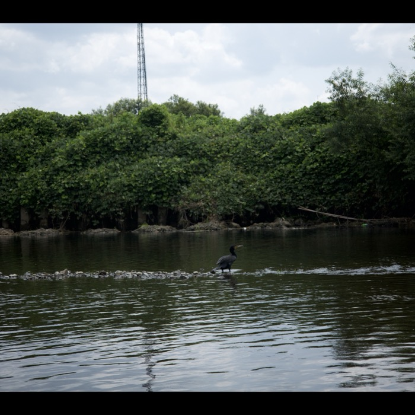
Cormorant
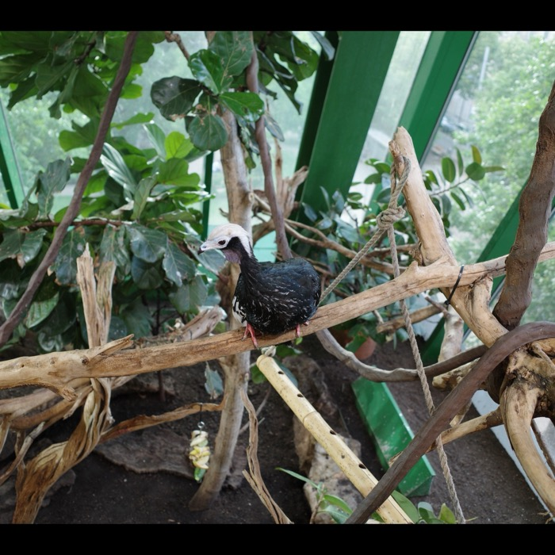
Piping Guan